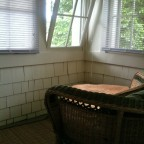
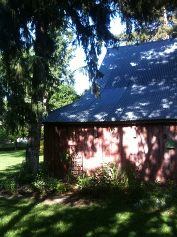

-
I came up with something sort of clever for my wife’s birthday dinner. I wanted to make some snacks to go with cocktails. I like to start dinner parties with a cocktail and a snack. It gives people something to do immediately. If someone has just come from work, starving and grumpy, a bite to […]
-
A while back, the missus and I celebrated our anniversary at Cannon Beach.
-
The Perfectly Fried Egg. via NYTimes.com
-
This is fantastic: http://studiofeast.com/2011/07/21/recap-doppelganger-dinner/ The vegetarian and omnivore dishes look nearly identical, but are made from different ingredients.
I was surprised to discover that Walla Walla, WA is a real place and not just just a Bugs Bunny joke. The missus and I took a short vacation to celebrate her completing her second year of medical school and taking step one of the USMLE. We chose a bed and breakfast in Walla Walla based upon the recommendation of a friend.
Nice wine in a nice tub

Small reading nook in our room
The Inn at Woodhaven Farm is a lovely renovated, farm house on 1 and a half acres of land in the middle of a historic district walking distance from downtown Walla Walla. The rooms have big bathrooms with claw-foot bathtubs and comfy, big beds. The two sisters who run the hotel leave cookies outside your room and deliver coffee to your door promptly at 7am. They make an outstanding breakfast.

Sun Dappled Barn
Vino
There are over 180 wineries in or nearby Walla Walla. Many tasting rooms are downtown. We visited three: Tru Cellars, Sinclair Estate Vineyards, and Dusted Valley.
Tru Cellars primarily specializes in sparkling wine created with actual (stamped, approved) barrels from the Champagne region. The owner, operator, janitor, and master of ceremonies was there in the tasting room to over-pour our samples, chat us up, and show us a good time. His Blanc de Blanc was one of the best sparkling wines I’ve tried.
Sinclair Estate Vineyards had an over decorated tasting room with impersonal and showy artwork. Life sized creepy bronze clowns are creepy. Their sad eyes don’t fool me. They’re monsters. Some other tourists allowed their child to bang on the piano in the lobby mercilessly. However, their wines – all reds and red blends – are very good.
Dusted Valley is a small two family operation. Their main tasting room is operated out of one family’s garage. We met Corey in the garage tasting room. He told us stories and answered my dumb questions over a generous tasting flight. Dusted Valley makes blended wines and some varietals – we bought a bottle of their special Cabernet Sauvignon for a special occasion.
Eating well in Walla Walla
We ate lunch twice at small, casual café / market called “Olive”. They serve local wines by the glass, have a few beers on tap, and make some very good pizza with a thin, crackling crust. Olive gets a mix of tourists, families, and college kids hanging out. The dining room is surprisingly huge but the service is fast and the setting is laid back and casual.
Would you like a crazy straw with that, sir?
For dinner on our first night in town, we splurged and ate at the Marc, in the Marcus Whitman Hotel. We had a lovely dinner with wine and cocktails. After dinner I ordered a limoncello. I think this through the staff for a loop. Walla Walla is wine country, so they don’t get much call for your fancy Eye-talian liqueurs. After the bartender hunted around for a bit, the waiter brought back a sturdy four-fingerd pour of limoncello. Skoal!.
On our last night in town we had dinner at Saffron where I enjoyed the very best octopus I’ve ever had.
We’re looking forward to another trip.